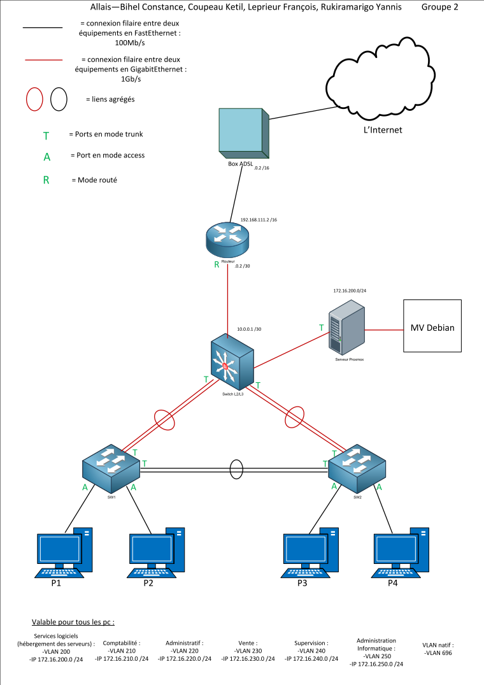
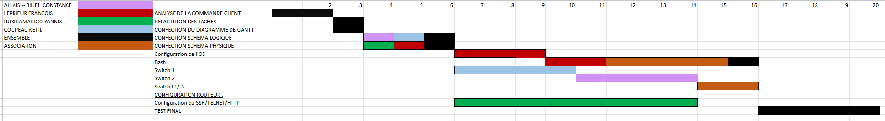

Création d'un réseau d'entreprise de 120 personnes
Présentation du projet
Conception et administration d'un réseau complet pour une entreprise fictive de 120 utilisateurs répartis en plusieurs services (Ventes, Commercial…). Chaque département est isolé dans un VLAN dédié, dispose d'un espace de partage Samba et d'un accès à un site web interne. Le projet couvre la conception, la configuration et le déploiement complet de l'infrastructure.
Contexte & Démarche
📋 Contexte
Simuler la mise en place d'une infrastructure réseau réelle pour une entreprise de 120 employés répartis en plusieurs services, chacun isolé dans son propre VLAN pour des raisons de sécurité et de performance.
🔧 Démarche
Définition du plan d'adressage IP → schéma physique (ports, câblage) → schéma logique (VLANs, modes de liens Trunk/Access/Routé) → configuration du routage inter-VLAN → déploiement des VMs sur Proxmox. Suivi via diagramme de Gantt.
Documents produits & ce qu'ils prouvent

J'ai conçu ce schéma logique pour définir l'architecture réseau complète : plan d'adressage IP, découpage en VLANs par département, adresses de réseau et de passerelle pour chaque segment.
Il précise également les modes de liens entre les équipements : ports en mode Access (postes utilisateurs), Trunk (liaisons inter-switch) et Mode routé (vers le routeur central). Ce document a servi de référence commune pour tout le groupe pendant la configuration.

J'ai réalisé ce schéma physique pour visualiser les connexions concrètes entre les équipements : numéros de ports utilisés sur chaque switch, câblage entre les baies et emplacement des équipements actifs.
Ce document nous a permis d'éviter les erreurs de câblage et de diagnostiquer rapidement les problèmes lors de la mise en commun — notamment une erreur d'adressage sur le routeur central qui a été identifiée grâce à ce schéma.

J'ai utilisé ce diagramme de Gantt pour planifier les tâches du projet en amont et suivre l'avancement de chaque membre du groupe. Il définit les grandes étapes : conception, configuration, tests et rédaction du compte rendu.
Grâce à cette planification, on a pu réagir rapidement lors des problèmes de mise en commun en ayant une phase de tests dédiée prévue dans le planning — ce qui nous a permis de corriger les erreurs avant la livraison finale.
Bilan
✅ Points forts
Bonne maîtrise du plan d'adressage et de la segmentation réseau. Configuration fonctionnelle du routage inter-VLAN. Bonne capacité à résoudre des problèmes en équipe. Planification efficace via le Gantt.
⚠️ À améliorer
La mise en commun a été délicate à cause d'erreurs d'adressage IP sur le routeur central. Le problème a été identifié et corrigé lors de la phase de tests. Une relecture croisée plus tôt aurait évité ce problème.
Fichiers du projet
🗜️ Télécharger l'archive du projet (configurations, schémas)